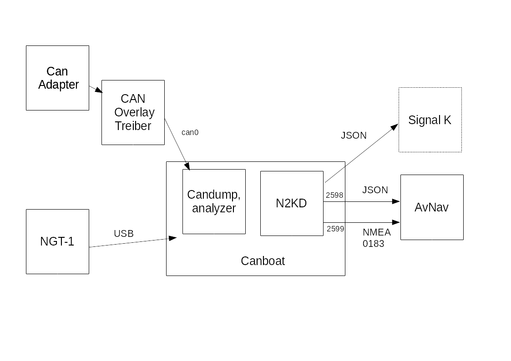
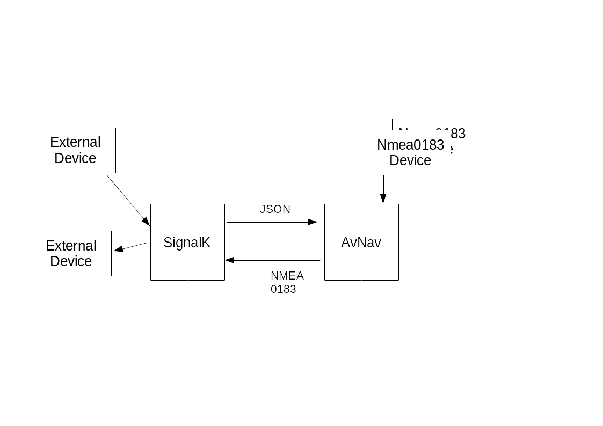

Starting with release 20200204 AvNav can interact with canboat (NMEA2000) and signalk.
Important Hint: Since version 20220421 the handling for SignalK changed.
Canboat supports interfacing to NMEA 2000 bus systems using either a CAN adapter (e.g. MCP2515 or a Waveshare RS485 CAN-HAT ) or USB attached devices like the Actisene NGT-1. For simple adapters you need to ensure that they have 2 voltage supplies (3.3V and 5V) to be usable for the raspberry pi. Many of the simple ones do not have that!
In the diagram the basic setup is shown as we provide it with the headless images.
If you connect a CAN
adapter via SPI
typically you need to enable an overlay in /boot/config.txt. Appropriate
entries are prepared to use the MCP2515 and only need to be uncommented.
Potentially you have to adjust the clock frequency and the GPIO pin used
for the interrupt. Such can adapters are listed as network interface
(probably they require configuration, but they are preconfigured in the
images).
The interface should be visible with
If you are planning to use an Actisense NGT-1 connected via USB refer to the documentation at canboat.
AvNav is communicating with n2kd. This daemon converts incoming NMEA2000 data to NMEA0183 (although not completely). The configuration for n2kd is located at
Within our images this file predefines a connection to can0. If you are
going to use an USB based adapter you have to modify this configuration.
In this case, please also add an entry in avnav_server.xml to exclude this
adapter from auto detection (watch the AvNav status page while connecting
the adapter - note its USB id and use it for the entry):
When traffic is present on the NMEA 2000 bus and if everything is setup correctly, you should see NMEA data / json data at ports 2599 and 2598. You can check this with
If you are unable to see data you can check the canboat status with
There should be 2 connections between AvNav and n2kd (predefined in the images). AvNav receives NMEA0183 data on one connection (port 2599) and some of the json data on the other connection (port 2598). The latter is necessary as n2kd does not provide any NMEA0183 record containing a complete time stamp (like RMC). To get the data from NMEA2000 AvNav directly decodes the pgns 126992 and 129029 to internally set date and time. It can also generate a RMC record internally (if valid position data is received via NMEA0183).
To setup the connections following configuration settings are necessary within avnav_server.xml. Our images have them preconfigured, otherwise they can be copied & pasted from the template at /usr/lib/avnav/raspberry/avnav_server.xml.
The first entry defines an additional output port for AvNav. This port provides all received/created NMEA 0183 data - excluding data received from canboat. This port is used for SignalK integration. Canboat data are omitted as signalk directly reads data from the NMEA 2000 bus.
The SocketReader at localhost:2599 reads NMEA0183 data from n2kd.
Direct reading of NMEA2000 data from n2kd is handled by a plugin. Therefore an entry has to be created in AVNPluginHandler. The settings as in above example activate the plugin. allowKeyOverwrite permits the plugin to set date and time. autoSendRMC=30 will advise AvNav to send out a RMC record every one second (if no other RMC records are seen within 30 seconds). For further explanation of the plugin parameters refer to the source code.
AvNav is currently not prepared to output data to NMEA2000. If this is required, you can handle this via signalk.
With version 20220421 the integration of AvNav with SignalK has been extended.
As a first step when integrating AvNav with SignalK you need to decide
about the basic flow of data.
There are 2 basic options:
For both variants AvNav can also send own data to SignalK. Currently those are routing data to the next way point (either as RMB/APB NMEA0183 data or as SignalK delta update - see below).
Additionally Notifications (Alarms) can be fetched and sent from/to SignalK.
With the version 20220421 the SignalK integration is not any longer handled by a plugin but by a dedicated "handler" - AVNSignalKHandler. You need to modify the Configuration at this handler now.
This flow is preconfigured in the AvNav headless images.
A AVNSocketWriter is created in AvNav (default: port 34568). This writer will forward received NMEA data. Forwarding of data from canboat will be prevented by blacklist entries.
On the SignalK side you need to configure a matching data connection for NMEA0183, TCP client.
By default the AVNSignalKHandler is configured to reach SignalK via
localhost:3000 and to read all data below vessels/self. Those values will
be stored in AvNav below gps.signalk,... and this way can be used
for Displays.
For fetching the data a mixture of polling with HTTP-Json and delta
updates via a websocket connection is used. The polling will ensure proper
sync of data, the websocket stream will give fast updates.
On the configured SocketWriter connection AvNav will also send its
routing data as RMB / APB Sätze towards SignalK.
Additionally you can enable the sending and receiving of SignalK
notifications at the AVNSignalKHandler.
Data that is arriving directly at SignalK via other pathes will be available in AvNav (as described below gps.signalk...) - but they cannot be used for AvNav's navigation functions.
If you would like to route your data to SignalK first you should have a look at the other data flow.
An advantage of flow 1 (NMEA to AvNav first) is the fact that this would still work even is SignalK is not available or not working for some reason.
With this flow (that is preconfigured at OpenPlotter from AvNavInstaller version xxxx) NMEA will be received and stored by SignalK. You need to configure the necessary data connections in SignalK.
In AvNav you configure the AVNSignalKHandler to fetch the data from
SignalK in a combination of HTTP-Json and a websocket delta update
connection.
The flags "decodeData" and "fetchAis" will be set (see Configuration).
This way received data will be stored in AvNav for it's navigation
functions. Additionally the data will be stored (a second time) as
described at (1) below gps.signalk.... to ensure
compatibility for the display usage.
For the mapping of the received data refer to [Mapping].
Additionally the sending of data ("sendData") is activated at the
AVNSignalKhandler. Routing data for the current way point and alarms will
be sent to SignalK.
Notifications from SignalK will be received.
To be able to write data to SignalK you have to configure a user with
write access at SignalK (see Configuration).
The NMEA connections to and from SignalK (port 10110) are not necessary any longer. You also do not need any plugin at SignalK to create NMEA data for sending it to AvNav.
If you update from an older version you can just simply disable the NMEA connections and adapt the settings of AVNSignalKHandler.
For a decision whether to use flow 1 (NMEA to AvNav first) or flow 2 (NMEA to SignalK first) you can start from the default of your installation.
You should only change it if there are good reasons for. By using the
configuration at the  status/server
page you can configure your flow. You can even create mixtures of
them.
status/server
page you can configure your flow. You can even create mixtures of
them.
You only have to be careful to avoid loops - e.g. sending data from AvNav
via NMEA0183 to SignalK and getting it back from SignalK again via
NMEA0183.
AvNav tries to address such mixed configurations with a "sourcePriority"
at every connection. All NMEA connections have a default priority of 50
compared to a default of 40 for The AVNSignalKHandler. This way data that
is decoded by AvNav itself will always win against data received from
SignalK (until you change the priorities).
The AVNSignalKHandler has the following configuration.
| Name | Description | Default |
| name | A name for the handler. Will be shown at the status page and used in logs. | empty (signalk) |
| enabled | If switched off the SignalK integration is disabled. Configured NMEA connections are not affected. | on |
| decodeData | If switched on the received data will be used for AvNav's navigation functions. See Mapping. | off (on at OpenPlotter) |
| fetchAis | If switched on AIS data (/vessels/*) is fetched from SignalK every 10s (aisQueryPeriod) and stored in AvNav as AIS data. | off (on at OpenPlotter) |
| priority | The priority of the decoded SignalK data | 40 |
| port | The SignalK HTTP port. | 3000 |
| host | The SignalK server hostname/the IP address. | localhost |
| aisQueryPeriod | Intervall (in s) for fetching AIS data | 10 |
| period | Period in ms for HTTP-Json queries to SignalK. if the python websocket libraries are available (the default) this interval will be enlarged close to the expiry time of navigation data in AvNav. | 1000 |
| fetchCharts | Fetch informations about charts installed at SignalK. It requires the SignalK-chart-provider plugin to be installed. | on |
| chartQueryPeriod | Interval (in s) for querying the chart information. | 10 |
| chartProxyMode | If SignalK is running on a different computer then AvNav it could
happen that the Browser that displays AvNav cannot directly reach
this computer. Therefore AvNav can proxy the chart requests to
SignalK. This creates some additional load on AvNav and can be switched off. Normally you can leave the default. sameHost: only proxy if SignalK is running on a different computer then AvNav never: no proxy at all (you can use this if the browser can directly reach SignalK at the address configured here) always: alsways proxy. Can be used if e.g. the SignalK port cannot directly be reached from outside. |
sameHost |
| ignoreTimestamp | Normally AvNav will consider the timestamp of SignalK data and
will ignore data that is to old (expiryPeriod in AVNConfig). A
potential time difference between SignalK and AvNav is considered. Sometimes SignalK does not use it's own local time for those time stamps but instead uses time stamps from the received data. Especially when using simulation data those times can be in the past and AvNav would ignore such data. By setting this flag AvNav will ignore those time stamps and will use it's own local time instead. It will update the timestamp whenever a value changes. This is not as accurate as using the original time stamps from SignalK but can help in making older simulation data working. |
off |
| sendData | Send data towards SignalK. You can still decide separately whether waypoint data and/or alarms should be sent. This will not control the sending of NMEA data to SignalK! |
off (on at OpenPlotter) |
| userName | The name of a SignalK user with write access at the SignalK
server. This user must exist with the correct rights at SignalK. Unfortunately SignalK has no interface to find out whether a particular user is able to write certain pathes. Only for localhost AvNav will check if the user has (in principle) write access. |
admin |
| password | The password for the configured user. For SignalK running at the
same computer like AvNav this normally can be left empty (as long as
the SignalK configuration is located at the default path
$HOME/.signalk/security.json). If you encounter an error in the status display at "authentication" it could become necessary to set this password also for local access (e.g. the config being located at a different location). Remark: The password will be stored in clear text in avnav_server.xml. |
<empty> |
| sendWp | Send way point data to SignalK. See Mapping. | on |
| sendNotifications | Send AvNav alarms as notifications to SignalK - See Mapping. | on |
| receiveNotifications | Receive notifications from SignalK as alarms. | off |
| notifyWhiteList | A comma separated list of SignalK notifications, that should be
received. The pathes are without the leading "notifications." e.g.:
navigation.arrivalCircleEntered,mob,fire,sinking. If the list is empty all notifications will be received but still the notifyBlacklist is considered. |
<empty> |
| notifyBlackList | A comma separated list of SignalK notifications that should not be received. | server.newVersion |
| webSocketRetry | Interval (in s) for recreating a new websocket connection if the old one has been closed. | 20 |
Some of the parameters will only become visible if the "parent" parameter is set.
SignalK pathes are mapped to AvNav data pathes:
/vessels/self/... => gps.signalk....
Those pathes are not used in AvNav internally but you can use them for display.
If "decodeData" is activatedthe following mappings will become active (also see in the code).
Remark: Courses/angles are stored in degrees inside AvNav whereas SignalK used rad. The mapping will convert between them. If there are multiple SignalK pathes in a mapping the first available will be used.
| SignalK below /vessels/self/ | AvNav |
| navigation.headingMagnetic | gps.headingMag |
| navigation.headingTrue | gps.headingTrue |
| environment.water.temperature | gps.waterTemp |
| navigation.speedThroughWater | gps.waterSpeed |
| environment.wind.speedTrue | gps.trueWindSpeed |
| environment.wind.speedApparent | gps.windSpeed |
| environment.wind.angleApparent | gps.windAngle |
| environment.wind.angleTrueWater (since 20240520) | gps.trueWindAngle |
| navigation.position.latitude | gps.lat |
| navigation.position.longitude | gps.lon |
| navigation.courseOverGroundTrue | gps.track |
| navigation.speedOverGround | gps.speed |
| environment.depth.belowTransducer | gps.depthBelowTransducer |
| environment.depth.belowSurface | gps.depthBelowWaterline |
| environment.depth.belowKeel | gps.depthBelowKeel |
| navigation.datetime | gps.time |
| navigation.gnss.satellitesInView.count | gps.satInview |
| navigation.gnss.satellites | gps.satUsed |
| navigation.magneticDeviation (since 20240520) | gps.magDeviation |
| navigation.magneticVariation (since 20240520) | gps.magVariation |
| environment.current.setTrue (since 20240520) | gps.currentSet |
| environment.current.drift (since 20240520) | gps.currentDrift |
AIS are mapped like ("fetchAis" on):
| SignalK vessels/*/ | AvNav ais | Remark |
| mmsi | mmsi | only if mmsi is available the data is stored |
| name | shipname | |
| navigation.speedOverGround | speed | |
| navigation.courseOverGroundTrue | course | |
| communication.callsignVhf | callsign | |
| design.aisShipType | shiptype | |
| navigation.position.longitude | lon | |
| navigation.position.latitude | lat | |
| navigation.destination | destination | |
| sensors.ais.class | type | class A -> type 1 class B -> type 18 other -> type other |
| design.beam | beam | |
| design.length | length | |
| design.draft | draught | |
| navigation.state | status | |
| navigation.headingTrue | heading | |
| atonType | aid_type |
If "sendWp" is active the following mapping is used:
| AvNav | SignalK vessels/self/ |
| currentLeg.to.lon | navigation.courseGreatCircle.nextPoint.position.longitude and navigation.courseGreatCircle.nextPoint.longitude |
| currentLeg.to.lat | navigation.courseGreatCircle.nextPoint.position.latitude and navigation.courseGreatCircle.nextPoint.latitude |
| currentLeg.from.lon | navigation.courseGreatCircle.previousPoint.position.longitude |
| currentLeg.from.lon | navigation.courseGreatCircle.previousPoint.position.latitude |
| currentLeg.distance | navigation.courseGreatCircle.nextPoint.distance |
| currentleg.dstBearing | navigation.courseGreatCircle.nextPoint.bearingTrue and navigation.courseGreatCircle.bearingToDestinationTrue |
| currentLeg.xte | navigation.courseGreatCircle.crossTrackError |
| currentLeg.approachDistance | navigation.courseGreatCircle.nextPoint.arrivalCircle |
| currentLeg.bearing | navigation.courseGreatCircle.bearingTrackTrue and navigation.courseGreatCircle.bearingOriginToDestinationTru |
If the AvNav routing mode is rhumbline all "courseGreatCircle" are replaced with "courseRhumbline". The doubled sending of some values with different pathes works around some issues on the signalK side (like https://github.com/SignalK/signalk-to-nmea2000/issues/94).
For notifications there only a few mappings, other will be mapped to "sk:"+name in AvNav. Example: notifications.sinking will become sk:sinking.
| AvNav | SignalK vessels/self/notifications | Value |
| mob | mob | 'state':'emergency', 'method':['visual','sound'], 'message':'man overboard' |
| waypoint | arrivalCircleEntered | 'state': 'normal', 'method': ['visual','sound'], 'message': 'arrival circle entered' |
| anchor | navigation.anchor | 'state':'emergency', 'method': ['visual','sound'], 'message': 'anchor drags' |
SignalK notifications without a mapping will be assigned to a category based on their state. With the catgeory you can define in AVNCommandHandler which command should be executed and which sound should be used.
emergency -> critical
normal -> normal
Since version 202011xx an integration of the SignalK chart provider is available. Charts provided by SignalK can be selected on the main page. You have to enable the chart provider plugin within SignalK and configure/upload charts.
Normally AvNav will just provide the information about these charts, the browser will directly access SignalK to load the chart tiles.
If this is blocked (e.g. by firewall rules) you can proxy all chart tile requests via AvNav.